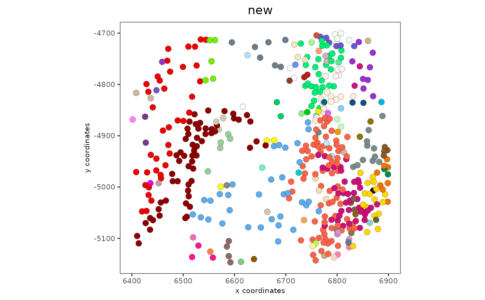

R/spatial_clusters.R
spatialSplitCluster.RdSplit cluster annotations based on a spatial network
spatialSplitCluster(
gobject,
spat_unit = NULL,
feat_type = NULL,
spatial_network_name = "Delaunay_network",
cluster_col,
split_clus_name = paste0(cluster_col, "_split")
)giotto object
spatial unit (e.g. "cell")
feature type (e.g. "rna", "dna", "protein")
character. Name of spatial network to use
character. Column in metadata containing original clustering
character. Name to assign the split cluster results information to split
library(Giotto)
g = GiottoData::loadGiottoMini('vizgen')
#> 1. read Giotto object
#> 2. read Giotto feature information
#> [1] "/Library/Frameworks/R.framework/Versions/4.3-arm64/Resources/library/GiottoData//Mini_datasets/Vizgen/VizgenObject//Features/rna_feature_spatVector.shp"
#> [1] "rna"
#> 3. read Giotto spatial information
#>
#> 3.1 read Giotto spatial shape information
#> [1] "aggregate_spatInfo_spatVector.shp" "z0_spatInfo_spatVector.shp"
#> [3] "z1_spatInfo_spatVector.shp"
#> aggregate
#> z0
#> z1
#>
#> 3.2 read Giotto spatial centroid information
#> aggregate
#> z0
#> z1
#>
#> 3.3 read Giotto spatial overlap information
#> [1] "rna_aggregate_spatInfo_spatVectorOverlaps.shp"
#> [2] "rna_z0_spatInfo_spatVectorOverlaps.shp"
#> [3] "rna_z1_spatInfo_spatVectorOverlaps.shp"
#> [1] "poly_ID" "feat_ID" "feat_ID_uniq" "stack"
#> aggregate and rna
#> [1] "poly_ID" "feat_ID" "feat_ID_uniq"
#> z0 and rna
#> [1] "poly_ID" "feat_ID" "feat_ID_uniq"
#> z1 and rna
#>
#> 4. read Giotto image information
#>
#> no external python path was provided, but a giotto python environment was found
#> and will be used
activeSpatUnit(g) = 'aggregate'
spatPlot2D(g, cell_color = 'leiden_clus')
g = spatialSplitCluster(g,
cluster_col = 'leiden_clus',
split_clus_name = 'new')
# don't show legend since there are too many categories generated
spatPlot2D(g, cell_color = 'new', show_legend = FALSE)
